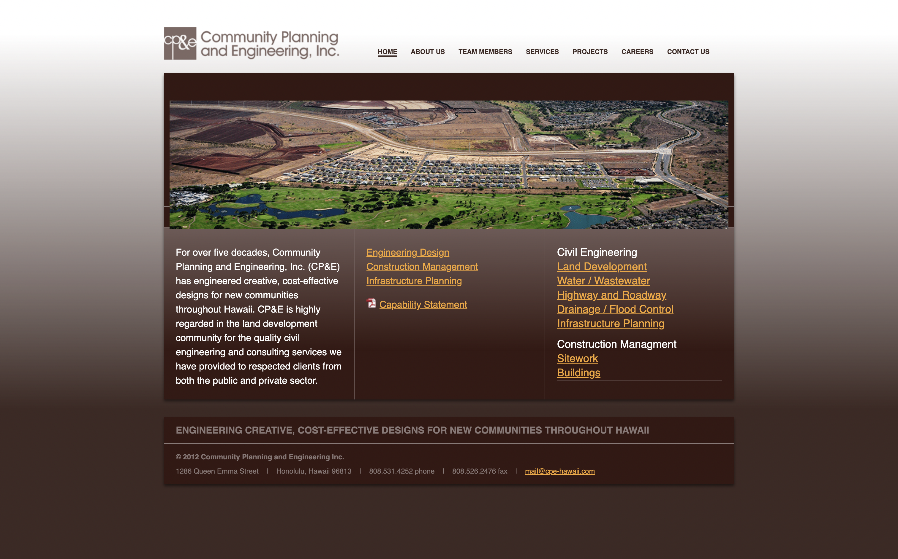
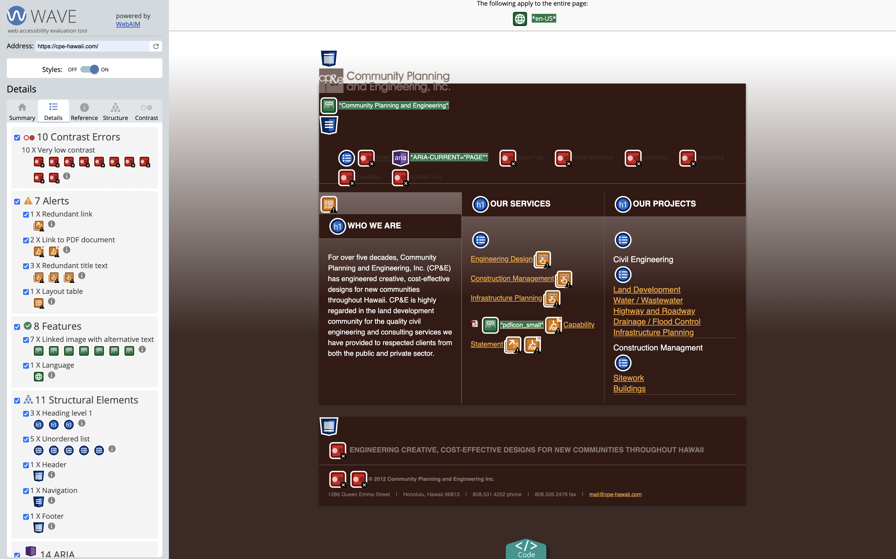
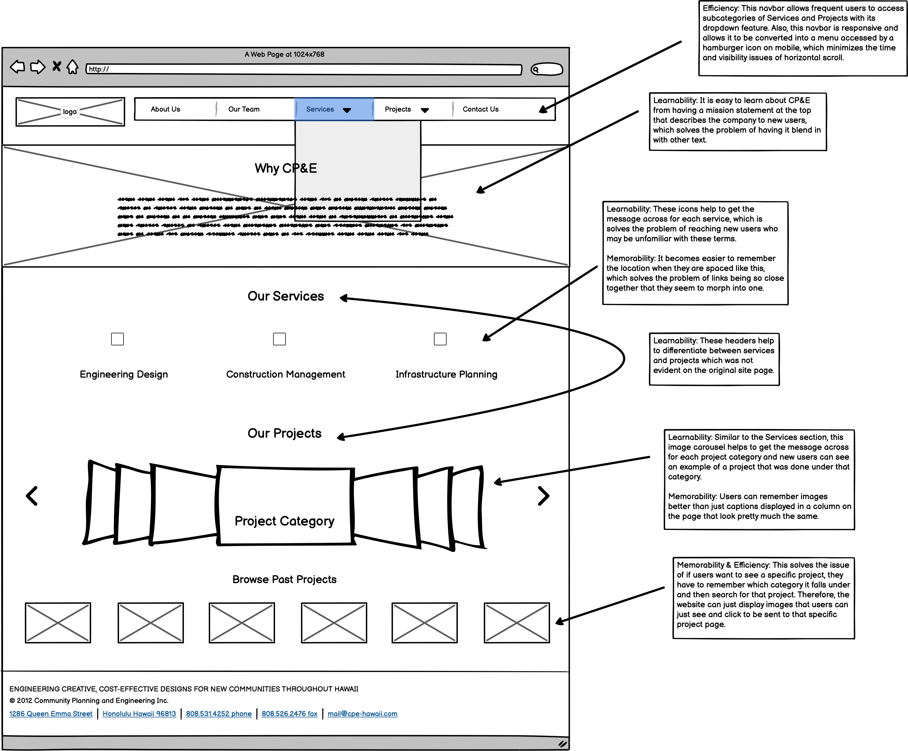
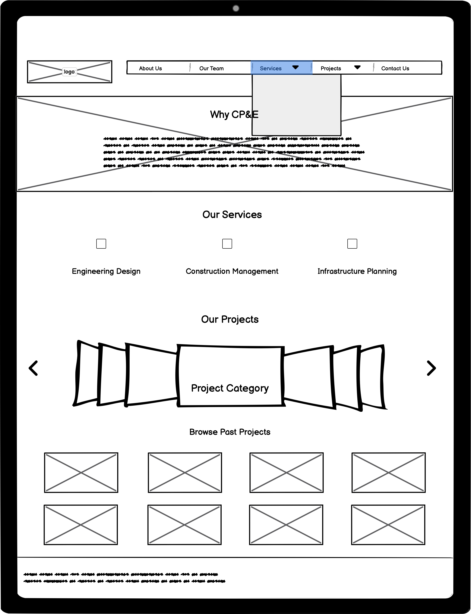
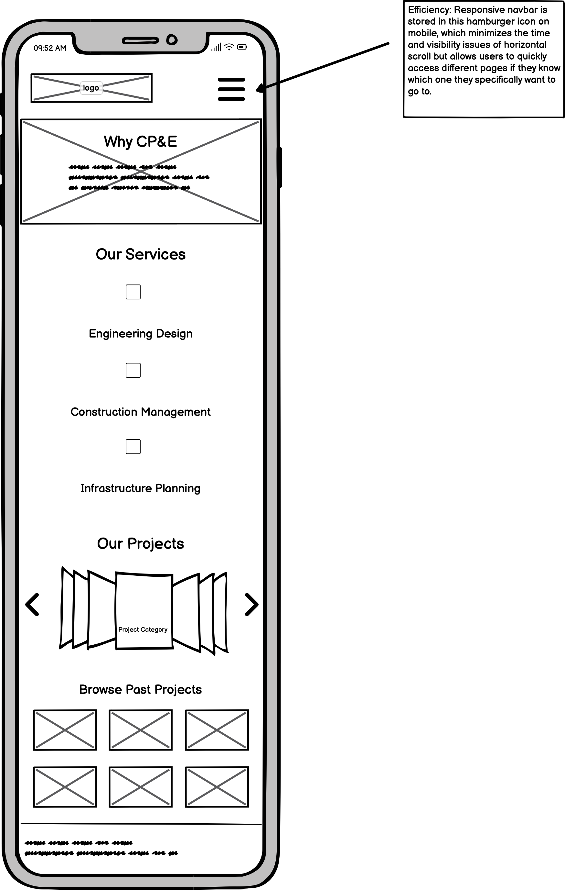
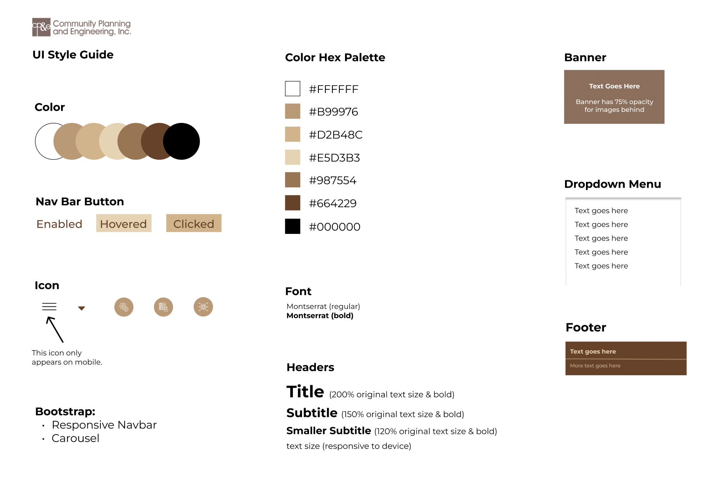
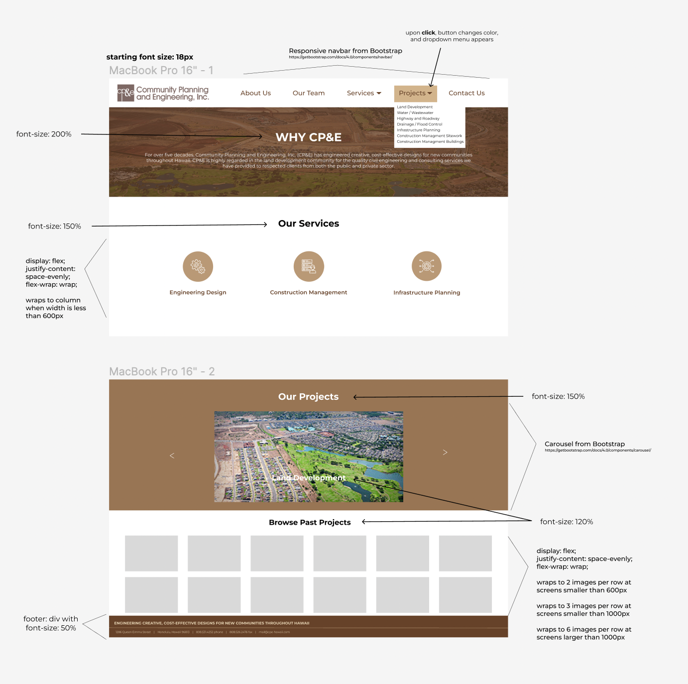
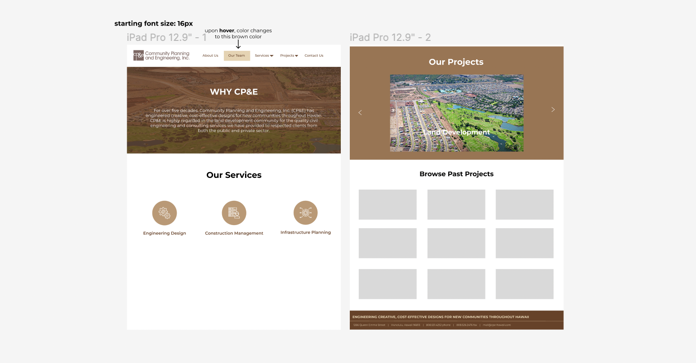
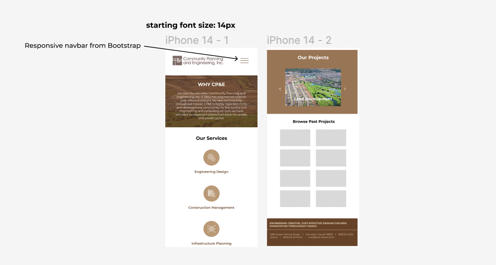

Responsive Redesign is an assignment in Brown University's CSCI 1300 in which students individually practice the workflow of redesigning a simple website.
Through analyzing and identifying flaws in an existing interface, I was tasked to create low-fidelity wireframes in Balsamiq and high-fidelity prototypes in Figma for various screen sizes, and build a responsive website in HTML and CSS based on those prototypes.
Problem to Solve
Fix the usability, accessibility, responsiveness, and overall design of:
CP&E Homepage

Whenever I think of a poorly designed website, my father’s engineering company’s website comes to mind because of its poor organization, unresponsive layout that doesn’t work on mobile, bad color scheme, and much more (sorry dad…), which is why I chose to redesign it.
Usability encompasses learnability, memorability, and efficiency
Learnability
The page is text heavy with a lack of images and symbols to help get messages and especially CP&E’s mission statement across because it blends in with the other text.
There are no headers over the columns explaining if they are services, projects, or what they even mean.
Related to this, there is a very overwhelming amount of text heavy project links that do not hint at what types of projects they lead to.
Memorability
If users want to see a specific project, they have to remember which category it falls under and then search for that project.
Since there are no images or icons that users can remember, it becomes difficult to differentiate text from other text, especially when there are no clear headers.
Efficiency
For the task of getting to a specific project, as mentioned above, a user find the project category and then inefficiently search through that category to find the project.
The navbar is not responsive and is the same on both desktop, tablet, and mobile devices, so in order to reach certain pages, the user has to use a horizontal scroll which is time-consuming.
Usability Heuristic Errors
Consistency and standards
The current site lacks consistency with modern UI design, especially when I compared it to other engineering firm websites in Hawaii as well as nationally.
Recognition rather than recall
As mentioned above, there is a lack of symbolic elements that users can recognize. Words are difficult to remember when prompted with almost ten different ones.
Match between system and the real world
Information does not appear in a natural and logical way and instead appears in columns that are difficult to follow, and also uses words possibly unfamiliar to the user without visuals. Additionally, the horizontal scroll on mobile is not a natural way for users to scroll through websites.
Aesthetic and minimalist design
Related to above, the site is just lacking in aesthetic UI design. It is minimalist, but it may be too minimalistic, since it just has links in a list. Overall, we need to have both aesthetics and minimalism, so the design can lead the user to find what is essential.
Conceptual Model
In this situation, the conceptual model reveals to the user that they have documented work, but you have to navigate through the links to find what you’re looking for and are given no hints besides two to three words.
A homepage should be able to direct users in the right direction, but users are just swamped with links. There is a lack of visual cues (headers, graphics, etc.) that tell the user, who is probably a potential client, what services they offer or their past experience in a clear way.
However, the company wants the conceptual model to allow these potential clients to learn about what services they can provide and see the variety of different types of projects that they work on.
Accessibility using WebAIM Wave

WebAIM WAVE detects a few contrast errors and alert errors. I agree with the contrast errors because of the overlays of similar brown, and the alerts because there are a few random features on the website that should be fixed. However, I do feel that there are many errors that were missed because a lot of them had to do with usability factors, as outlined in the usability section above, which this tool could not detect as there is not a real human analyzing all webpages. I feel that towards accessibility, we have to ensure even more that usability is to the highest standard. For instance, those with bad eyesight may look at the list of services or projects and not be able to differentiate them because it just looks like a large block of text. WebAIM WAVE could not detect problems like those, but a real human using the accessibility and design standards that we learned about in class could.
Low-fidelity Wireframing
Desktop

Tablet

Mobile

Visual Design Style Guide

High-fidelity Prototyping
Desktop

Tablet

Mobile

Responsive Redesign
**Website also embedded below in desktop, tablet, and mobile sizes**
Desktop
Project Conclusion
In this project, I gained experience in usability testing, accessibility testing, and going from low-fidelity in Balsamiq, to high-fidelity in Figma, to a responsive webpage in HTML and CSS.